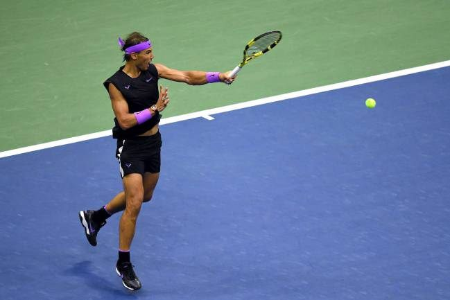
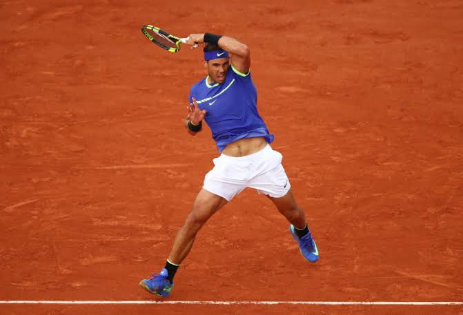
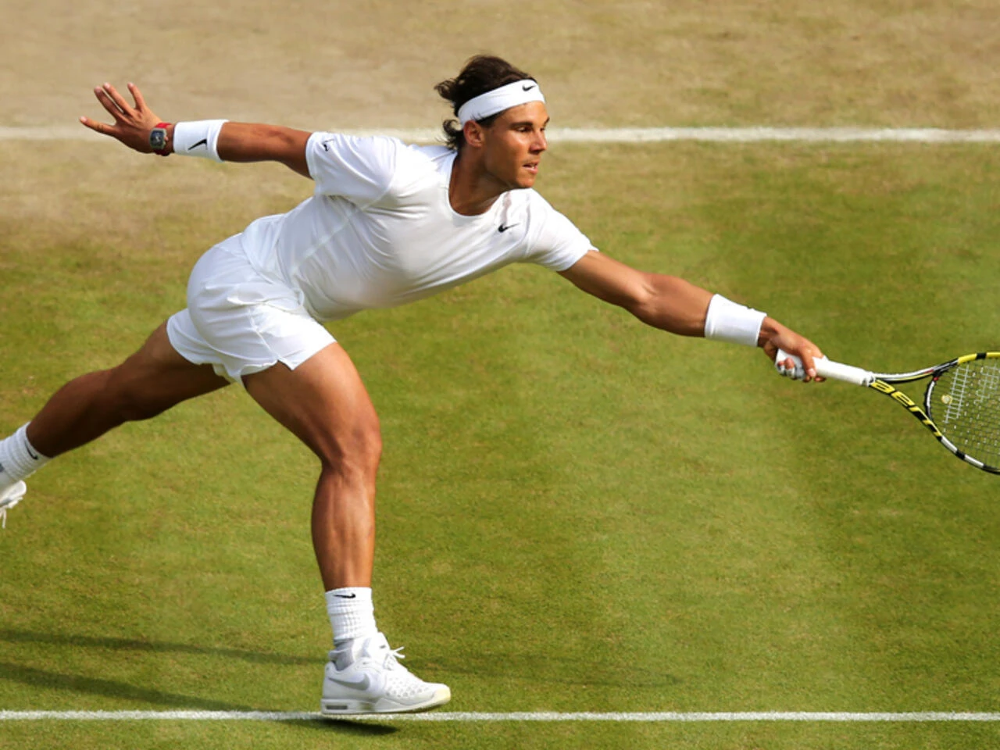

326 perfiles
Aces por encima de la media y menor devolución.
CIENCIA DE DATOS · UTN FRM · GRUPO 5K10-05
¿Existen estilos de juego diferenciables según el saque y la devolución? ¿Hay uno superior? ¿El cruce de estilos predice al ganador mejor que el ranking?
Hay tres estilos de juego, pero ninguno es superior: lo que decide los partidos es el ranking, y sumar estilos no mejora la predicción.
Seguí la evidencia ↓Del dato al hallazgo. Después, vos hacés las preguntas.
LO QUE ENCONTRAMOS
¿Existen estilos?
3 estilos1.224 perfiles0,17 silhouette326 sacadores de potencia, 496 restadores sólidos y 402 de saque frágil. Cada perfil es un jugador en una superficie. El silhouette va de −1 a 1: los grupos se repiten al remuestrear, pero sus bordes son difusos.
¿Hay uno superior?
66 % de las veces que los ■ restadores sólidos llegan como favoritos, gananLlegar como favorito es tener mejor ranking que el rival. Como favoritos, los sacadores de potencia ganan el 61,6 % y los de saque frágil, el 56,4 %.
¿Predicen mejor que el ranking?
64,5 % sin estilos64,2 % con estilosSon los aciertos en 4.773 partidos de 2023–2025. Sumar estilos no mejora: la diferencia puede ser casualidad.
CÓMO LEER LA PÁGINA
Cada figura de la cancha es un estilo. Los vas a ver con el mismo color y la misma forma en todos los gráficos.
01 / LOS DATOS
Así llegamos de los partidos que descargó el DAG atp_ingest de Tennis My Life a las filas que analiza esta página. Cada flecha es un filtro.
Un perfil es un jugador en una superficie. Nadal no juega igual en cemento, en polvo de ladrillo o en césped, así que en el análisis aparece tres veces: una fila por cancha, cada una con las estadísticas de todos sus partidos de 2000–2025 en esa superficie.

■ Restadores sólidos

■ Restadores sólidos

■ Restadores sólidos
Mismo jugador, tres perfiles con números distintos: en césped hace más aces y en polvo de ladrillo gana más puntos al resto. Por eso cada perfil se compara con la media de su superficie. Las tres veces queda como restador sólido.
Cómo leer el gráfico: cada barra es una superficie y reparte a los mismos 1.450 jugadores del Silver. El tramo oscuro es lo que queda para el análisis; el gris, los que jugaron ahí pero no alcanzan los mínimos; el claro, los que nunca jugaron en esa superficie. Césped aporta la mitad de filas que cemento.
La fuente es el portal de datos de Tennis My Life. El DAG atp_ingest de la Entrega 1 descarga un CSV por temporada, los consolida, construye el dataset de jugadores, valida y guarda. Los datos son del corte del 23/09/2026: partidos de 2000 a 2025, más el Silver de 1.450 jugadores y 157 columnas.
En el pipeline, una fila es un partido. En esta aplicación, una fila es un perfil jugador–superficie, agregado sobre 2000–2025: un jugador puede aparecer hasta tres veces, porque no juega igual en cada superficie.
| Paso | Quedan | Por qué |
|---|
Quedan . Estos filtros favorecen a quienes permanecen en el circuito: no representan a todos los tenistas. Los faltantes no se convierten en cero. La parte predictiva del modelo aplica además sus propios filtros, que están en su sección.
Hay fuga cuando el modelo usa información que no existía antes de que empezara el partido que quiere predecir. Para decidir qué datos sacar partimos de estas hipótesis:
| Columnas | Por qué salen |
|---|---|
winner_id, loser_id | El nombre de la columna ya dice quién ganó. Cada partido se reasigna a jugador A y B al azar, con semilla 42. |
score, minutes | Se conocen recién al terminar el partido. |
w_ace, l_ace y el resto de w_* y l_* | Son estadísticas del mismo partido que se quiere predecir. Sólo entran acumuladas, con fechas estrictamente anteriores. |
Tasa de victorias, ranking y títulos tampoco entran a los estilos, pero por otra razón: no es fuga sino circularidad, porque son lo que después se compara contra ellos.
02 / PRIMERA HIPÓTESIS
Antes de mirar los datos escribimos lo que esperábamos: quien hace más aces gana menos puntos al resto (hipótesis H5). Y fijamos la vara: si la correlación bajaba de −0,6, hablaríamos de un compromiso fuerte. La correlación (r) va de −1 a 1 y mide qué tan bien una recta resume la relación.
Cada punto es un perfil. Cero es la media de su superficie, y +1 está un desvío por encima.
LO QUE ENCONTRAMOS
La relación es negativa: más aces van con menos puntos ganados al resto, r = −0,50. La recta cae de izquierda a derecha, pero la nube es ancha y no llega a −0,6. Es una tendencia moderada, no un compromiso fuerte: la H5 queda inconclusa.
¿Y la altura? Tocá «Pintar por altura»: los más altos se corren hacia abajo a la derecha. Ya lo habíamos visto en la Entrega 2 (H4, se sostuvo): en estos 1.223 perfiles, la altura va con más aces (r = 0,65) y con menos puntos al resto (r = −0,37). Por eso la altura no entra a los estilos: es una causa física, no una forma de jugar.
La medición. Tomamos cada jugador en cada superficie con suficientes partidos (1.224 perfiles) y cruzamos su tasa de aces con los puntos que gana al resto. Antes, comparamos a cada uno con la media de su superficie: en césped todos hacen más aces, y sin ese ajuste el gráfico mezclaría la cancha con el jugador.
Con más partidos. Si sólo tomamos perfiles con 50 partidos o más, queda : tampoco llega a −0,6. Y la recta muestra una asociación, no una causa.
Se sostuvo, H2: aces y efectividad del primer saque son casi la misma medida (), así que la segunda salió del clustering. No se sostuvo, H6: esperábamos que los que mejor devuelven jugaran partidos más largos, y no hay relación (). La duración no distingue estilos.
El hallazgo del título es H5, y queda inconclusa con la regla que fijamos antes de medir: el signo negativo se cumple, pero no llega al umbral de −0,6.
| Hipótesis de la Entrega 2 | Número | n | Resultado |
|---|
La transformación que no es obvia: las dos tasas se estandarizan dentro de cada superficie, restando la media y dividiendo por el desvío (ddof=1). En césped hay más aces y se devuelve menos que en polvo de ladrillo. Sin este paso, parte de la relación sería la superficie y no el jugador: con tasas crudas r = −0,60, y estandarizadas r = −0,50.
Datos: los 1.224 perfiles. Marcas: puntos semitransparentes y una línea. Mapeo: aces estandarizados a x, resto estandarizado a y. Transformación: transform_regression para la recta. Escalas lineales que no parten de cero: son puntos, no barras.
03 / CÓMO ARMAMOS LOS GRUPOS
Para responderlo agrupamos los perfiles sin decirle al modelo qué buscar: no hay una respuesta correcta de antemano. Lo hicimos en cuatro pasos.
Cada perfil se describe con siete tasas de saque y resto:
Cada tasa se compara con la media de su superficie: en césped todos hacen más aces y en polvo de ladrillo todos ganan más puntos al resto, así que sin ese ajuste los grupos terminarían siendo «los de césped» y «los de polvo de ladrillo». Quedan afuera la efectividad del primer saque, porque repite casi lo mismo que los aces (H2); las victorias, el ranking y los títulos, porque los estilos describen cómo se juega y no cuánto se gana; y la altura, porque es física y no una forma de jugar (H4).
Siete tasas no se pueden dibujar juntas. PCA las combina en dos ejes nuevos que conservan la mayor parte posible de las diferencias entre los perfiles: el 58,8 %.
Cada punto es un perfil, todavía sin grupos: así se ven los datos antes de K-means.
K-means elige k centros, asigna cada perfil al centro más cercano, mueve cada centro al promedio de su grupo y repite hasta que nada cambia. Trabaja con las siete tasas, no con el plano del PCA: el plano sólo sirve para dibujar el resultado.
Lo que K-means no decide es cuántos grupos armar. Probamos de 2 a 7 y miramos dos medidas:
| Grupos (k) | Silhouette ↑ | Estabilidad (ARI) ↑ |
|---|
LA DECISIÓN
Elegimos tres grupos. Con dos quedan apenas mejor separados (silhouette 0,19 contra 0,17), pero sólo dividen «sacadores contra el resto». Con tres siguen siendo igual de estables (ARI 0,87); desde cuatro, los grupos cambian mucho de una muestra a otra (0,68). Tres fue una decisión nuestra, no algo que impongan los números.
Así quedan los grupos en el mismo mapa. Cada uno ocupa una zona: los sacadores a la derecha, los restadores arriba a la izquierda y los de saque frágil abajo.
Mismo mapa que el paso 2: ahora cada punto lleva el color y la forma de su grupo.
Aces por encima de la media y menor devolución.
Mejor devolución, menos dobles faltas y segundo saque sólido.
Menor efectividad del segundo saque; es un nombre relativo al conjunto.
| Tasa | Sacadores de potencia | Restadores sólidos | Saque frágil |
|---|
Cómo leerlo: cada columna es el jugador típico de un estilo, con cada tasa medida en desvíos estándar respecto del promedio de su superficie. 0 es un jugador promedio, +1 está un desvío por encima y −1 uno por debajo: un valor negativo en aces quiere decir menos aces que el promedio. Cuanto más intenso el color, más lejos del promedio; en negrita, las diferencias de medio desvío o más.
De dónde salen los nombres. El grupo con más aces es el de los sacadores de potencia. De los otros dos, el que tiene el segundo saque más flojo es el de saque frágil, y el que queda es el de los restadores sólidos, que son los que mejor devuelven.
LO QUE ENCONTRAMOS
Sí hay tres estilos que se repiten, pero no están bien separados: casi tres de cada cuatro perfiles (73 %) quedan cerca del límite entre dos estilos. Son tres cortes de un continuo, útiles para describir, no tres categorías cerradas.
04 / ¿HAY UN ESTILO SUPERIOR?
Ya tenemos tres estilos. La pregunta siguiente es si alguno gana más que los otros. Para responderla miramos los 4.773 partidos de 2023 a 2025: en cada uno, a los dos jugadores les pusimos el estilo que tenían antes de jugarlo y después contamos cuántas veces ganó cada estilo. Lo hicimos en tres pasos.
La primera cuenta es la más simple: de todos los partidos que jugó cada estilo, ¿qué parte ganó?
de sus partidos ganados.
de sus partidos ganados.
de sus partidos ganados.
A primera vista ganan los restadores sólidos y el saque frágil queda bastante abajo. Pero esta cuenta tiene una trampa.
No todos los estilos juegan contra rivales parecidos. Los restadores sólidos suelen ser mejores jugadores: llegan con mejor ranking que su rival en más de la mitad de sus partidos. Los de saque frágil, en uno de cada tres.
Cada barra es la parte de sus partidos en que ese estilo llegó como favorito, es decir, con mejor ranking que el rival. La línea punteada marca la mitad.
Si un estilo gana más sólo porque llega más veces como favorito, el mérito es del ranking y no del estilo. Para separar las dos cosas hay que comparar parejo.
Separamos los partidos en dos: los que cada estilo jugó llegando como favorito y los que jugó llegando como no favorito. Así cada estilo se mide contra los otros en la misma situación.
Arriba, los partidos en que el estilo llegó con mejor ranking que su rival; abajo, con peor ranking. La línea punteada marca el 50 %.
De acá sale el 66 % de la portada. De cada 100 partidos en que un restador sólido llegó con mejor ranking que su rival, ganó 66. Es lo más alto entre los favoritos: los sacadores de potencia ganan 62 y los de saque frágil, 56.
LO QUE ENCONTRAMOS
No hay un estilo superior. Como favoritos, los restadores sólidos ganan un poco más; pero como no favoritos, los que más sorprenden son los sacadores de potencia (37,9 %, contra 34,4 % de los restadores y 35,3 % del saque frágil). Lo que más pesa es el ranking, no el estilo.
Qué partidos. Los 4.773 partidos del test (2023–2025) en que los dos jugadores tenían al menos 20 partidos previos en esa superficie, 80 % o más de cobertura de saque y resto, las siete tasas definidas y ranking válido. No cuentan los walkovers. Cada partido aporta dos participaciones, una victoria y una derrota: 9.546 en total.
Qué estilo tiene cada jugador. El de su historial anterior al partido: sólo cuentan torneos que empezaron antes, y se excluyen todos los partidos de la misma fecha. Las siete tasas se estandarizan por superficie y se asignan al centro más cercano de K-means, ajustado con partidos hasta 2018 y congelado. Por eso un jugador puede cambiar de estilo con los años.
Quién es el favorito. El de mejor ranking ATP al momento del partido. No hubo empates de ranking: cada partido tiene exactamente un favorito.
Qué se mide. La proporción de participaciones ganadas por cada estilo. Cuando se cruzan dos jugadores del mismo estilo, su victoria y su derrota se compensan y empujan la tasa hacia el 50 %.
¿Qué tan seguro es cada porcentaje? Con otros partidos, cada porcentaje podría haber salido un poco distinto. Para medir cuánto, repetimos la cuenta 1.000 veces, cada vez con un sorteo distinto de torneos tomados de los mismos datos (es la técnica llamada bootstrap; semilla 42). El intervalo del 95 % es el rango donde cayeron 95 de cada 100 de esas repeticiones: es la última columna de la tabla. Sorteamos torneos enteros y no partidos sueltos porque los partidos de un mismo torneo se parecen entre sí: misma cancha, mismas condiciones, los mismos jugadores avanzando ronda a ronda.
Qué dice en este caso. Como favoritos, los restadores sólidos ganan entre el 64,1 % y el 67,9 %, y los sacadores de potencia entre el 58,8 % y el 64,1 %. Los dos rangos casi se tocan: la ventaja de los restadores existe, pero es chica.
| Situación | Estilo | Participaciones | Ganó | Intervalo del 95 % |
|---|
Límites. Es una descripción, no una causa: controla una sola variable, el ranking. Este corte se agregó después de ver el test y no se usó para elegir ningún modelo; la comparación de modelos de la sección siguiente es la que responde si el estilo sirve para predecir.
05 / ¿PREDICE MEJOR QUE EL RANKING?
Si los estilos sirven para algo más que describir, tendrían que ayudar a adivinar quién gana un partido. Para probarlo entrenamos un modelo con partidos viejos y lo pusimos a prueba con partidos que nunca había visto.
Separamos los partidos por año, no al azar: así el modelo nunca aprende del futuro.
El modelo le da puntos a uno de los dos jugadores y los convierte en una probabilidad de ganar. Para eso mira tres cosas:
Armamos dos versiones: una que mira ranking y contexto, y otra que además mira los estilos. Si los estilos sirven, la segunda tendría que acertar más.
Junta tres piezas y las convierte en la probabilidad de que gane cada jugador.
Más distancia, más favorito.
Cuenta la proporción: 10 vs 20 pesa igual que 50 vs 100.
Puntos a favor → probabilidad de ganar.
Superficie y formato cambian cuánto pesa el ranking.
El n.º 10 contra el n.º 20. A 5 sets hay menos lugar para la sorpresa.
El contexto no le suma puntos a ningún jugador: cambia el peso que el modelo le da a la diferencia de ranking. Mismo n.º 10 contra n.º 20:
| Situación | Peso | Gana el 10 |
|---|---|---|
| Cemento · 3 sets | 0,498 | 59 % |
| Polvo de ladrillo | 0,502 | 59 % |
| Césped | 0,450 | 58 % |
| A 5 sets | 0,735 | 62 % |
A 5 sets el ranking pesa un 48 % más: en un partido largo, al mejor le cuesta menos imponerse. En césped, con puntos cortos y mucho saque, hay un poco más de lugar para la sorpresa. En polvo de ladrillo queda casi igual que en cemento.
Un empujoncito según el cruce y la cancha.
Con el mismo ranking. Gana el de la izquierda.
Si los dos tienen el mismo ranking, esa pieza vale 0 y sólo queda el estilo. Para cada cancha y cada cruce de estilos, el modelo aprendió cuántos puntos sumarle a un lado:
| Cruce | Puntos | Gana |
|---|---|---|
| Polvo · Restador vs Saque frágil | +0,294 | 57 % |
| Polvo · Restador vs Sacador | +0,194 | 55 % |
| Césped · Sacador vs Restador | +0,183 | 55 % |
El cruce restador–sacador se da vuelta según la cancha: en polvo de ladrillo, lenta, gana el restador; en césped, rápida, gana el sacador. Pero son empujones chicos: una diferencia de ranking grande puede llevar un partido a 80 o 90 %.
Es una regresión logística: multiplica cada variable por un peso, suma todo y pasa ese total por una función que lo convierte en una probabilidad entre 0 y 100 %. Los pesos los aprendió de los partidos: con 29.781 partidos de 2000–2018 probó cuatro niveles de regularización, eligió con los 5.714 de 2019–2022 el que mejor acertaba las probabilidades (C = 10) y después se volvió a entrenar con 2000–2022.
Para que no aprenda atajos, en cada partido se sortea quién es el jugador A y quién el B, y el modelo no tiene término independiente: si se invierten los jugadores, la probabilidad se invierte. El ranking es el de ese partido, y el estilo de cada jugador sale sólo de sus partidos anteriores, nunca del que se quiere predecir.
El partido: polvo de ladrillo, a 5 sets. Jugador A: n.º 5, restador sólido. Jugador B: n.º 30, sacador de potencia.
| Variable | Valor | × Peso | = Puntos |
|---|---|---|---|
| Total: puntos a favor de A | 1,518 | ||
Las otras 9 variables valen 0 en este partido: son de otras canchas o de otros cruces de estilos.
Sin el aporte del cruce de estilos, A tendría 79 %: el estilo le suma 3 puntos porcentuales. Casi todo el trabajo lo hace el ranking.
El empujón del estilo es chico al lado del ranking: por eso casi nunca cambia quién es el favorito.
Y lo comparamos con la regla más simple de todas: elegir siempre al mejor rankeado, que acierta el 64,5 %. Es el piso que hay que superar.
Ranking + contexto
de aciertos · log-loss 0,6297
Ranking + contexto + estilos
de aciertos · log-loss 0,6306
Los 4.773 partidos de 2023 a 2025, los mismos para los dos modelos y para la regla simple.
LO QUE ENCONTRAMOS
No: sumar los estilos no mejora la predicción. El modelo con estilos acierta lo mismo, o apenas menos, que el que sólo mira el ranking, y ninguno supera a elegir siempre al mejor rankeado. ¿De dónde sale esa diferencia? De muy pocos partidos:
4.773
partidos del test
En 4.661 los dos modelos eligen al mismo favorito.
112
partidos en que los estilos cambian al favorito: el 2,3 %, la franja de color de la barra.
¿Quién acertó en esos 112?
El estilo sirve para describir cómo juega alguien; quién gana lo decide sobre todo el ranking.
Qué partidos. De 77.474 partidos descargados quedan 74.918 con superficie válida y sin walkover, y 40.268 en que los dos jugadores tienen al menos 20 partidos previos en esa superficie, 80 % o más de cobertura de saque y resto, las siete tasas definidas y ranking válido. Los retiros cuentan con el resultado registrado. Por eso el test usa 4.773 de los 8.423 partidos de 2023–2025.
Sin información del futuro. El ranking es el de ese partido. El estilo de cada jugador sale sólo de torneos que empezaron antes, con los centros de K-means ajustados hasta 2018 y congelados. En cada partido se sortea quién es el jugador A, y el modelo no tiene término independiente: si se invierten los jugadores, la probabilidad se invierte.
El modelo. Una regresión logística. Sin estilos usa 4 variables: el logaritmo de la proporción de rankings y esa misma distancia multiplicada por polvo de ladrillo, césped y cinco sets. Con estilos suma 9 más: una por cada cruce de dos estilos distintos en cada superficie (3 cruces × 3 superficies). Para cada versión probamos cuatro valores de regularización (C = 0,01; 0,1; 1 y 10), elegimos el de menor log-loss en validación y la reentrenamos con 2000–2022 antes de medirla en el test.
Por qué esas métricas. Se elige por log-loss porque la aplicación muestra probabilidades y esa métrica castiga una probabilidad mal puesta, no sólo un favorito errado. Se informa también accuracy porque se lee sola y las clases están balanceadas: A gana el 49,6 % del test.
| Regla | Accuracy ↑ | Log-loss ↓ |
|---|
¿La diferencia es real? Repetimos la comparación 2.000 veces sorteando los 290 torneos del test. Con estilos, la accuracy cambia −0,29 puntos (rango del 95 %: −0,73 a 0,11) y la log-loss sube 0,0010 (rango: −0,0004 a 0,0024). Los dos rangos incluyen el cero: puede ser un poquito mejor o un poquito peor. No hay una diferencia clara.
En qué se apoya. Apagando un bloque de variables por vez, la log-loss en el test es 0,6306 con todo, 0,6922 sin el ranking (casi como tirar una moneda) y 0,6295 sin los estilos. Todo el trabajo lo hace el ranking.
¿Por qué el simulador usa el modelo con estilos? Porque se eligió antes de ver el test, con la validación, donde había salido apenas mejor. El test se usa una sola vez, para medir: cambiar de modelo después de ver el resultado sería hacer trampa.
LA COPA · EXPLORÁ
Elegí en cuántos grupos dividir a los 1.224 perfiles y mirá quiénes representan mejor a cada uno. También podés filtrar por superficie y experiencia, o buscar un jugador.
Pasá el mouse para ver el detalle, o hacé clic en un punto para fijarlo debajo. El círculo negro marca al mayor exponente de cada grupo. Los filtros conservan las escalas para que la comparación no cambie de tamaño.
Los tres jugadores con el estilo más marcado de su grupo: los que más se alejan del promedio en la dirección que define al grupo. Esa distancia se calcula con las siete tasas, pero el mapa de arriba muestra sólo los dos componentes del PCA, que resumen el 59 % de la variación. Por eso el mayor exponente, el del círculo negro, no siempre se ve como el punto más alejado: un perfil puede parecer más extremo en el plano y no serlo en las siete tasas. Sólo cuentan perfiles con 100 partidos o más. Con pocos partidos los números salen extremos por azar (H1); con ese mínimo, además, los exponentes son jugadores de carrera larga y más conocidos, y cada estilo se reconoce más fácil. Si un jugador aparece en varias superficies, cuenta su perfil más marcado. Respetan la superficie y los partidos mínimos que elijas. Tocá un nombre para ver su detalle.
Cantidad de grupos. Con k = 3 se usan los estilos de la Entrega 3. Para los otros k, build.py corre K-means sobre las mismas siete tasas estandarizadas por superficie (n_init = 10, semilla 42, como en el barrido de k de la Entrega 3) y guarda el grupo de cada perfil. Cada grupo se nombra con sus dos rasgos más alejados del promedio. El botón cambia el parámetro kGrupos, que elige qué columna colorea el mapa.
Mayores exponentes. El centro de cada grupo marca hacia dónde se aleja del jugador promedio. Para cada perfil del grupo se calcula cuánto avanza en esa misma dirección: la proyección de sus siete tasas estandarizadas sobre el centro (producto escalar con el centro dividido por su largo). Los de mayor proyección son los más extremos del grupo. Entran los perfiles que cumplen la superficie y los partidos mínimos elegidos, con un piso de 100 partidos (H1), y cada jugador aparece una sola vez.
Superficie, grupo, mínimo de partidos y búsqueda cambian parámetros que lee transform_filter del gráfico Altair. Cambian las filas, no los centros ni las escalas. El tooltip es un canal de mapeo; el clic en un punto y el selector de perfil ofrecen el mismo detalle, también con teclado. Restablecer devuelve el panorama completo. El resultado del modelo ya está calculado en cada fila, no se reentrena al filtrar.
LA COPA · PROBÁ EL MODELO / UN PERFIL NUEVO
Cargá siete porcentajes de un historial de partidos en la misma superficie, o partí de un jugador real. El modelo te dice a qué estilo se parece y qué jugadores tienen el perfil más parecido. Es una asignación descriptiva, no una probabilidad de ganar.
RESULTADO DEL MODELO
Las barras muestran distancias en siete dimensiones; el menor valor decide. Los puntos comparan tu perfil (rombo negro) con el centro asignado, que lleva el color y la forma de su estilo, como en el resto de la página.
JUGADORES MÁS PARECIDOS
Se comparan los siete rasgos estandarizados contra todos los perfiles de la misma superficie. Tocá un jugador para ver en qué se parecen y dónde queda en el mapa.
COMPARACIÓN
| Rasgo | Tu perfil | Jugador |
|---|
EN EL MAPA DE ESTILOS (PCA)
El rombo negro es el perfil cargado; los cinco parecidos llevan borde y el elegido, un círculo y una línea punteada. De fondo, el resto de los perfiles de la superficie con el color y la forma de su estilo.
¿Por qué los parecidos no siempre se ven pegados? El mapa PCA resume los siete rasgos en sólo dos ejes, que explican el de la variación; el resto queda fuera del dibujo. La lista, en cambio, mide la distancia con los siete rasgos. Por eso un jugador puede estar muy cerca en los siete y verse algo separado en el mapa, y otro puede verse cerca en el mapa pero diferir en rasgos que el mapa no muestra.
Las tasas imposibles, vacías o no numéricas se rechazan. Sólo se aceptan las tres superficies conocidas. Se avisa si un porcentaje sale del mínimo–máximo observado en su superficie o si la distancia al centro supera el percentil 95 de las distancias de entrenamiento. Estar dentro de cada rango no garantiza una combinación habitual; por eso también se controla la distancia conjunta.
Si los dos centros más cercanos están a menos del 10 % de distancia relativa, se señala una frontera. Ese 10 % es una regla de comunicación, no una probabilidad calibrada. Un caso extremo puede asignarse al centro más cercano y seguir siendo poco representativo. La app no puede comprobar el historial real que respalda porcentajes cargados a mano.